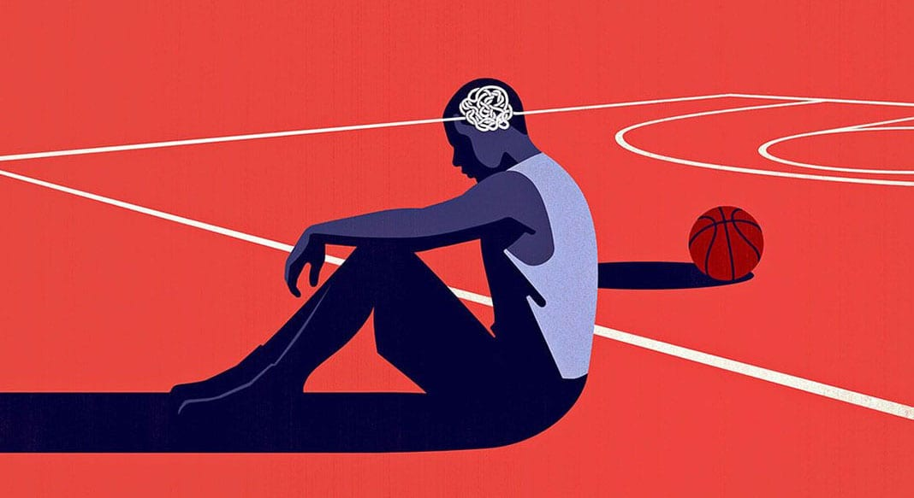

One challenge I have faced as an athlete is dealing with the pressure I put on myself. As a goalie, I constantly felt like I had to be perfect. I would tell myself that I wasn't good enough to start, and every mistake felt huge. When I started doubting myself, it affected the way I played. Instead of focusing on the game, I focused on everything that could go wrong.
There were also times when comments from my coach got into my head and made me question my abilities even more. The more I listened to those negative thoughts, the harder it became to perform well in practices and games. It felt like I was stuck in a cycle where I expected myself to fail, and then when I struggled, it only reinforced those beliefs.
Over time, I learned that mental health and confidence play a huge role in sports. Being a good athlete is not just about physical skill. It is also about how you talk to yourself and how you handle challenges. I learned that one bad game, one mistake, or one person's opinion does not define who I am as an athlete.
If there is one thing I would tell other athletes, it is that you are more than your performance. It is okay to struggle, ask for help, and talk about what you are going through. Everyone faces challenges, even if they don't always show it. Taking care of your mental health is just as important as training for your sport.
One thing I want other athletes to know is that confidence can affect your performance just as much as physical skill. When I was constantly telling myself I wasn't good enough, I started believing it, and it showed in the way I played. Looking back, I wish I had been kinder to myself and recognized that every athlete struggles with self-doubt at some point.
What helped me most was having people around me who believed in me, even when I didn't believe in myself. Their support reminded me that my worth as an athlete was not defined by one game, one mistake, or one person's opinion. Over time, I learned to focus less on being perfect and more on improving and enjoying the sport I love.
To anyone going through something similar, know that you are not alone. It is okay to struggle, and it is okay to ask for help. Talking about mental health should be just as normal as talking about physical injuries. The strongest thing an athlete can do is be honest about what they are going through and continue moving forward, even when things feel difficult.
Support
Resources & Support
If this story resonated with you, these resources may help support athletes navigating performance anxiety, self-doubt, pressure, identity struggles, and mental health challenges.
Broad Shoulders Initiative is not a crisis service, medical provider, or therapy provider. If support feels urgent, please contact emergency services, a trusted adult, a school counselor, or a licensed professional.